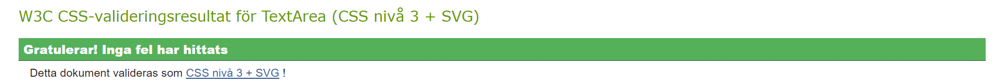
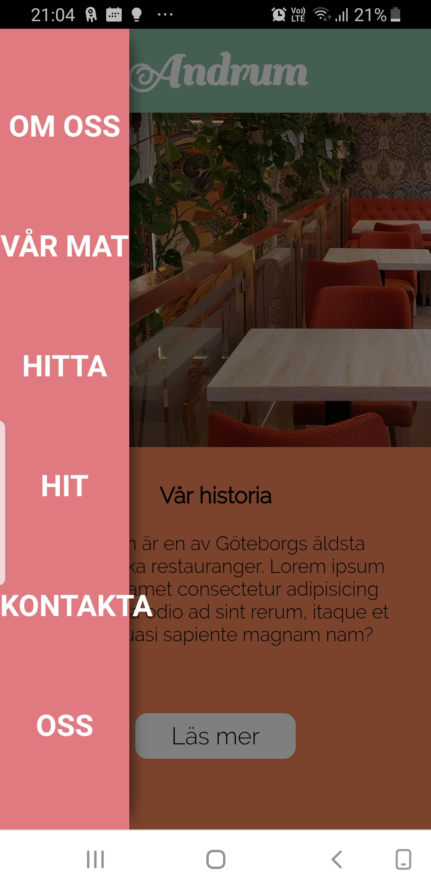
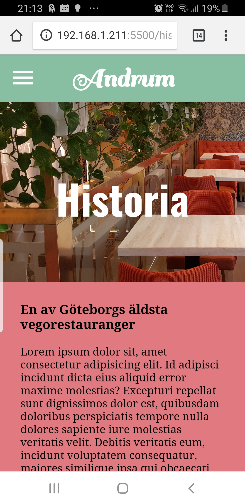
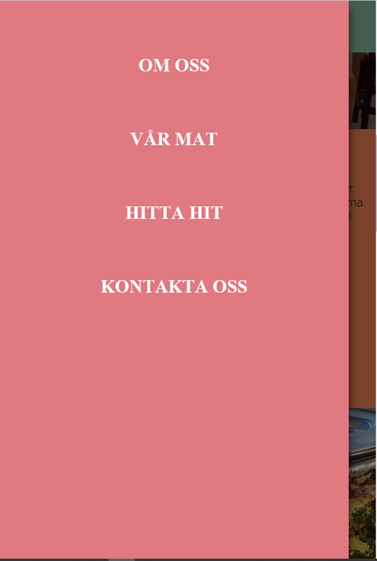
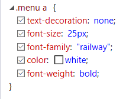
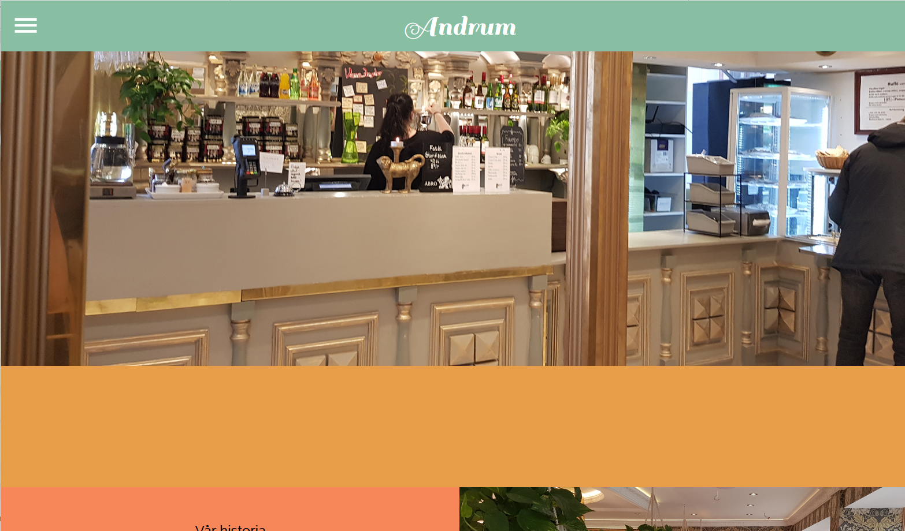
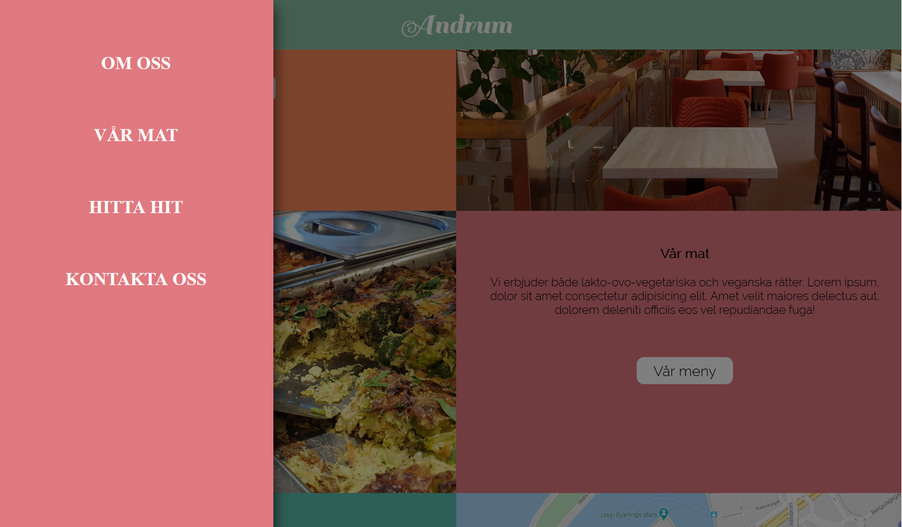

Jag ska göra en hemsida till restaurangen där jag jobbar. Det är en raltivt gammal restaurang och de har ingen hemsida i nuläget. De håller just nu på att renovera hela restaurangen för att göra den mer modern och jag ser detta som en perefkt möjlighet att även modernisera tillgängligheten och information om restaurangen genom en hemsida. Jag har tänkt att inspireras av andra restaurangers hemsidor såsom Holy greens och Togogo. Jag skall försöka hitta en färgtema som jag tycker speglar restaurangens atmosfär och mat.
| Vecka | På lektionen | Utanför lektionen |
|---|---|---|
| 5 | Planering, bestämma målgrupp | |
| 6 | Skissa | Ladda upp skissen |
| 7 | Påbörja index.html | Fortsätta med index |
| 8 |
Skapa de andra html-sidorna
På börja css (grid mm, mobilanpassning) |
Fortsätta med mobilanpassningen |
| 9 |
Lägga in bilder och text Styla dessa i css |
CSS |
| 10 | Påbörja desktop-anpassning Slideshow | Finslipa |
| 11 |
Slideshow färger, fonts |
Ta bilder på restaurangen |
| 12 |
Slideshow Hamburgarmeny Fyll footer |
Fyll undersidor (google-map) ta fler bilder |
jkfekjkejf
Hemma kunde jag också fixa med undersidorna. På "hitta"-sidan ville jag ha en embedded google map vilket finns tillgänglighet
på google. Däremot ville jag att kartans storlek skulle anpassas till sidan storlek men problemet var att den var en iframe-tag
med egenskaperna redan ditsatta med bredd och höjd. Viewheight och viewwdith-måtten fanns inte den "syntaxen"
men jag lyckades komma runt detta genom att lägga till style så att jag ändå
kunde komma åt css värden.
Denna lektionen gick fort! Jag upplevde att jag inte hann så mcyket som jag hade planerat. Denna lektion tänkte jag hinna göra testet, anpassa slideshow och göra iordning alla undersidor - vilket i och för sig var en väldigt ambitiös plan. Jag han fixa lite smågrejer men jag har fortfarande mycket kvar. Därför kommer jag att behöva jobba ganska intensivt nu fram till inlämning.
Efter att ha testat index.html fick jag ett par varningar och felmeddelanden. Vissa var lätta att fixa (ex. en saknad sluttagg)
och vissa tog lite längre tid. Jag hade exempelvis satt en a-tagg inuti en button vilket tydligen inte var lämpligt. Därför ändrade
jag button-taggen till en div-tagg men eftersom jag hade en class som cssen utgick ifrån så gick det smidigt.
Några varningar valde jag att inte göra något åt (se nedan). Det var exempelvis att man skulle ha en heading i varje section ellet
att den klagade google-font-länken.
När jag testade css-koden fick jag först ett litet felmeddelanden angående en kommentar längst ner i filen som jag hade glömt att ta bort. Men så fort jag raderade denna så blev den godkänd.
När jag provade att öppna hemsidan i mobilen så insåg jag att sidomenyn inte riktgt stämde. Detta berodde på att jag hade angett bredden med viewwdith-mått och jag inte inte satt in nya värden under @media screen anpassningen. Därför ändrade jag så att mobilanpassningen istället hade 90vw. Dessutom hade jag glömt att jag hade väntat med att ange font och storlek på articlen på undersidorna för att jag inte hade bestämt mig hur jag ville att det skulle se ut än.
 Jag började att testa hemsidan på internet explorer. Det jag noterade var att fonten "raleway" som används i sidomenyn inte verkade fungera. Så vitt jag kan se så ser det ut som att den funkar i brödtexten i index.hml. Jag funderar därför om detta kan ha att göra med referenslänken till gooogle-fonts - kanske därför jag fick ett felmeddeland när jag gjorde valideringen. Å andra sidan verkar ju den funka för brödtexten? Jag började därför spekulera om det kan ha att göra med att det är länkar och det kanske finns någon annan form av prioriteringsordning i explorer men det är nog inte heller troligt eftersom länktexten i knapparna på index.hml har fonten raleway. Det verkar inte heller ha att göra med att den är bold. Jag testade även en annan metod för att importera fonten (via cssen @media...) Men detta fungerade inte heller.
 Dessutom hamnade headern under slide-showen. Detta kunde jag fixa men ett z-index med högt värde.
Den andra webbläsaren jag provade var firefox. Men även där så stämde inte heller fonten i menyn. Däremot satt headern rätt.
 Det som gick mindre bra var att jag kände mig lite stressad och hade ganska mycket kvar att fixa i slutet av projektet.
Därför borde jag strukturerat och schemalagt lektionerna så att jag visste hur mycket tid jag kunde lägga på varje moment
och på så sätt förhoppningsvis mer effektivt.
Det som gick bra var att jag upplevde att jag hade ganska klar bild hur hemsidan
skulle se ut och jag lyckades väldigt bra med gridet och responsiviteten på index.hml. Däremot blev jag lite mindre nöjs med headern.
Jag ville att den skulle vara "fixed" men jag tyckte ändå inte att det såg så bra ut eftersom jag inte visste vilken färg jag ville
att headern skulle ha. I början hade jag en bild om vilka färger jag ville att hemsidan skulle ha (de skulle spegla färgerna
på inredningen i restaurangen) men när jag hade kommit en bit blev det lite för mycket färg och därav var det svårt att färgsätta headern.
Om jag hade mer tid kanske jag istället hade implementerat med javascript och kanske gjort att headern hade bytt form eller färg,
eventuell en eventlistner på om sidan scrollas.
Under detta moment har jag lärt mig mycket, bland annat hur man kan i css använda flera classer och sedan ge egenskaper genom att exempelvis
skriva ".header.bild" eller ".section img". Jag har även lyckats lösa flera problem som jag stött på (exempelvis det jag tidigare nämnt
om att göra google-map-kartan resposiv).
Om jag hade haft mer tid hade jag redigerat hemsidans bilder med färgbalans, intensitet, nyans mm. Då tror jag att hemsidans innehåll hade smält ihop bättre och givit en mer enhetlig look. Jag hade dessutom försökt lära mig mer javascript.